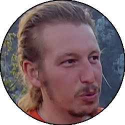

Relazione
| Data Uscita | 29-06-2023, Giovedì | Area | Campelli-Aralalta |
|---|---|---|---|
| Luogo di Partenza | Via Roncaiolo - Moggio (LC) | Quota |
900m la partenza 1780m il rifugio Lecco 1950m (circa) l'attacco della via 2094m la cima |
| Dislivello | 1200m (circa) | Tempi | 07:00 ore (02:00 ore la via) |
| Esposizione | Ovest | Difficoltà Tecnica | IV (pp. IV+) |
| Punti di Appoggio | Rifugio Lecco | Acqua | Fontana a La Piazza nella valle del Pesciola, niente ai Piani di Bobbio (ma c'è il rifugio) |
| Partecipanti |
 Francesco M,
Giorgio,
 Oracolo Oracolo
|
||
(clicca sull'immagine per scarica la traccia GPS)
Accesso
Da Lecco salire in Valsassina. All'altezza di Balisio seguire verso destra, direzione Culmine di San Pietro, superando prima Maggio, poi Cassina Valsassina e arrivando infine a Moggio. Alla rotonda in centro al paese prendere a sinistra, superando presso una curva a destra il municipio imboccando così via Roncaiolo. Parcheggiare dove possibile nei pressi della strada lastricata che sale verso sinistra (indicazioni per Artavaggio).
Avvicinamento
Seguire la strada lastricata che sale su pendenze prima modeste, poi più sostenute, fino a una zona tra prati e casolari con bella vista verso la Culmine di San Pietro. Proseguire ancora sulla strada fino a una deviazione presso il bosco, dove si seguono le indicazioni verso Bobbio/La Piazza. Seguire il sentiero nel bosco con numerose deviazioni ma sempre ben segnate, fino a raggiungere la località La Piazza con una comoda fontana dove bere. Da lì prendere verso sinistra seguendo sempre le indicazioni che con qualche tornante e in progressiva salita porta fino alla baita di Pesciola Bassa, da cui si entra nella parte alta della valle della Pesciola, che si segue per comodo sentiero fino alla bocchetta della Pesciola, dove finalmente si entra ai Piani di Bobbio e con un traverso a mezza costa si raggiunge il rifugio Lecco.
Dal rifugio inoltrarsi nel vallone dei Camosci, prendendo la prima marcata deviazione sulla destra che consente di scendere nel fondo del vallone e passare dall'altro lato sulla verticale della terza torre del Pesciola. Arrivando alla base delle pareti, seguire la traccia a mezzacosta verso destra che costeggia tutta la parete, arrivando via via sempre più verso il filo di cresta. Appena raggiunto, ci si troverò in una zona dove sulla cengia sorge un grosso sasso triangolare, e i resinati sulla parete daranno la certezza dell'attacco corretto.
Via
L1: salire la facile rampa, tramite diedrini e cengette portarsi a una comoda cengia dove si sosta su 2 resinati da collegare.
» 25m, 3 resinati (III)
» 25m, 3 resinati (III)
L2: salire un risalto appena a destra della sosta, non difficile ma attenzione a non cadere in quanto si pesterebbe coi piedi sulla cengia. Resinato in cima, da esso traversare verso destra fino a un largo diedro che si sale inizialmente senza difficoltà, fino alla fine che si stringe e diventa abbastanza verticale (chiodo, p. IV) uscire dal diedro dritti o verso sinistra, consigliabile arrampicare con larghe spaccate per usare i migliori appoggi, poco dopo per risalti facili si raggiunge la sosta su 2 resinati da collegare. È possibile effettuare il tiro anche sulla sinistra per un caminetto, difficoltà simili (p. IV+), resinati, si arriva alla stessa sosta.
» 20m, 1 resinato, 1 chiodo (III+ p. IV, I)
» 20m, 1 resinato, 1 chiodo (III+ p. IV, I)
Raccordo: da questo punto in poi conviene proseguire slegati (o al limite in conserva) per il facile sentiero sempre evidente, intervallato da facili passaggi di arrampicata (max II). Prestare attenzione nella parte finale del raccordo a una discesina di pochi metri (sempre II, eventualmente resinato a destra per scendere in sicurezza). Dopo la discesina per rampa ascendente verso destra ci si porta in centro al torrione finale, dove parte un evidente camino che taglia la parete a metà. Sosta su un resinato e un chiodo vecchio cementato. Possibili diverse varianti più difficili (solitamente sulla sinistra). Se non si volesse fare gli ultimi tiri è possibile ripiegare sulla ferrata spostandosi circa 30m a destra.
» 300m circa, vari resinati e soste (pp. II)
» 300m circa, vari resinati e soste (pp. II)
L3: affrontare direttamente il camino (oppure poco a sx per poi ristabilirsi verso destra) con arrampicata non banale (pp. IV+). Passi lunghi data la mancanza di piedi comodi. Si sale fino a una zona più abbattuta sopra al secondo resinato, dove si prosegue sempre dritti fino a una zona più terrosa (resinato) che porta alla cengia della sosta (2 resinati + catena), sotto un altro camino. Attenzione in uscita all'erba un po' scivolosa.
» 25m, 3 resinati (IV, pp. IV+)
» 25m, 3 resinati (IV, pp. IV+)
L4: salire il camino inizialmente per rocce tranquille fino a una zona più verticale e apparentemente più ostica, ma cercare bene che ci sono delle maniglie giganti, inoltre si sale sempre facilmente in spaccata. Uscire dal camino verso sinistra e poche facili roccette portarsi fino alla sosta finale (2 resinati + catena).
» 25m, 2 resinati, 1 sosta intermedia (III, III+)
» 25m, 2 resinati, 1 sosta intermedia (III, III+)
Per un facile pendio nevoso ci si porta fino alla visibile madonnina di vetta.
Discesa
Dalla vetta scendere sul versante opposto (Est) fino alla forcella di cresta, dove verso sinistra si stacca l'evidente canale della Madonnina, che si segue tra roccette e ghiaia fino a rientrare senza grosse difficoltà nel vallone dei Camosci. Portarsi nel fondo del vallone e riprendere la strada percorsa durante l'avvicinamento, da cui al rifugio Lecco, alla bocchetta di Pesciola e a Moggio seguendo a ritroso il sentiero percorso all'inizio.